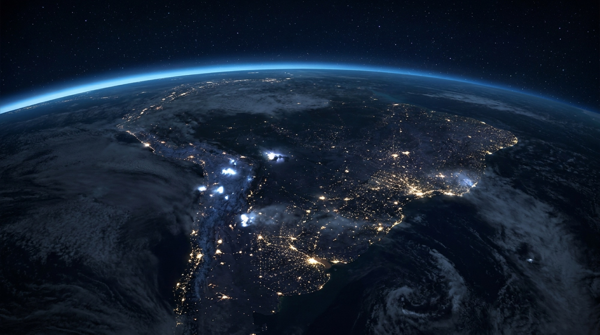
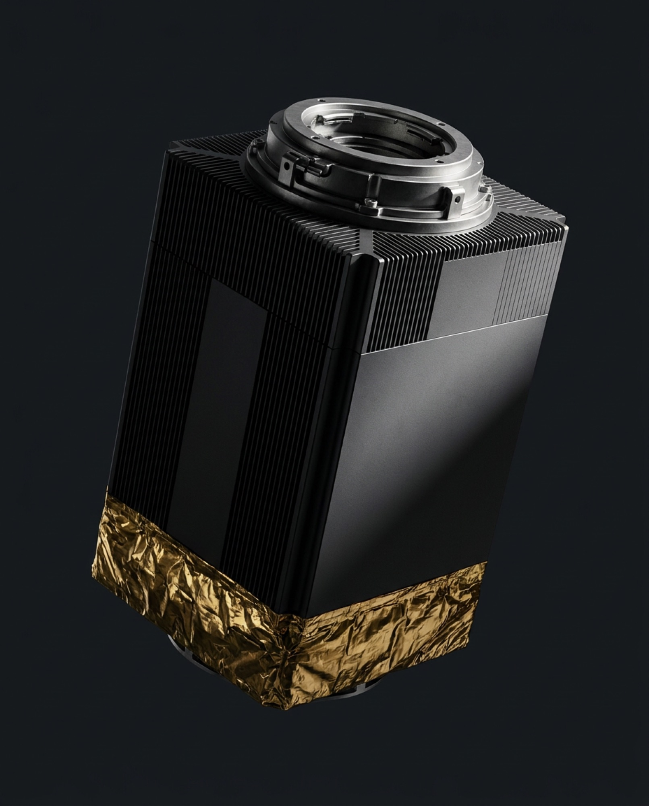

Sol sin noche
En una órbita sincrónica al Sol, los paneles reciben irradiancia constante sin atmósfera que la filtre. No hay ciclo diurno, no hay nubes, no hay estacionalidad.
1 361W/m² · constante solar
Constelación ECU-1 · operativa
La inteligencia artificial dejó de caber en la Tierra. ORBITAL construye y opera cómputo en órbita baja: sol permanente, refrigeración contra el vacío a 3 K, cero hectáreas, cero agua.
La tesis
Un centro de datos de gigavatio consume la electricidad de una ciudad mediana y evapora millones de litros al año para enfriarse. En órbita baja, los tres problemas desaparecen a la vez.
En una órbita sincrónica al Sol, los paneles reciben irradiancia constante sin atmósfera que la filtre. No hay ciclo diurno, no hay nubes, no hay estacionalidad.
El espacio profundo está a 2,7 K. Los radiadores desplegables emiten el calor residual por radiación infrarroja directa. Sin torres, sin chillers, sin una sola gota de agua.
En fibra de sílice la luz viaja al 67% de c. En el vacío, al 100%. Sobre distancias continentales, el enlace óptico intersatelital gana a la fibra terrestre.


La unidad
Cada nodo es un sistema cerrado: cómputo, potencia, control térmico y enlace óptico en un único módulo tolerante a radiación. Se lanza plegado, se despliega en 90 segundos y no vuelve a tocarse.
Escala
Tres planos orbitales: ecuatorial, polar y sincrónico al Sol.
Equivalente a un centro de datos terrestre de 34 MW.
Quito, Singapur, Nairobi y Svalbard. Cobertura continua.
Sin una sola interrupción atribuible al segmento espacial.
Continuar
Rastreador en vivo de los 24 nodos, segmento terrestre y latencia comparada por ciudad.
Abrir → 02Arquitectura, materiales y ensamblaje del módulo de cómputo orbital.
Abrir → 03Consola de operaciones en vivo y manifiesto de lanzamientos.
Abrir → 04Cronología, respaldo institucional y hacia dónde vamos.
Abrir →